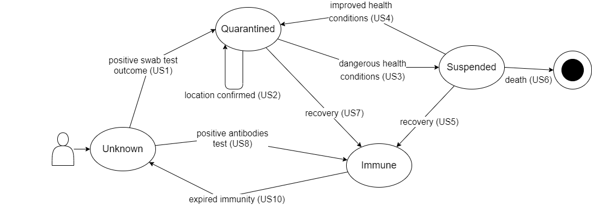
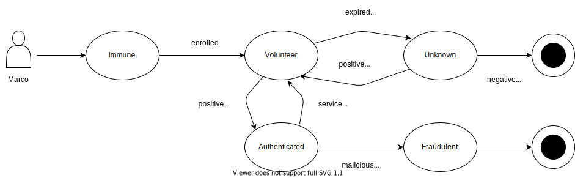
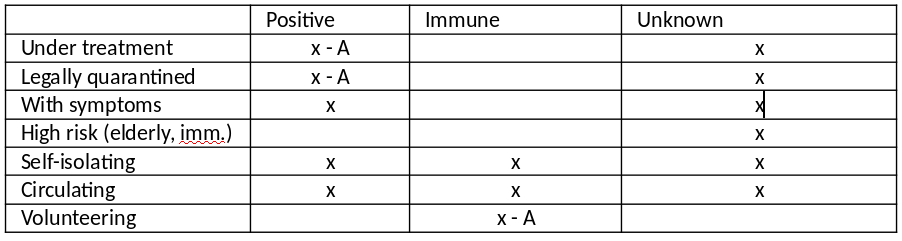

Status of This Document
This document is an incomplete draft. The sections that have been incorporated have been reviewed following the SafeTogether [Process]. However, the information in this document is still subject to change.You are invited to contribute any feedback, comments, or questions you might have.
Contributors
Many people contributed to this specification; here is an incomplete list (please contact editor to add your name in this list):
-
Andrea Carmignani
-
Enrico Fagnoni
-
Leonardo Longhi
-
Luca Merealli
-
Luciano Baresi
-
Michele D’Aliessi
-
Mohd Ehtesham Miah
-
Silvia Loffi
-
Stefano Quintarelli
-
Yassine Ouahidi
Many thanks to all contributors in GitHub
1. Personas
This section descrbes the personas. A persona, is a fictional character created to represent a SafetTogether stakeholder.
The SafeTogether specification distinguishes two kinds of personas:
-
who are interested in implementing SafeTogether specification (Implementers)
-
who are are using SafeTogether application
1.1. Implementers
1.1.1. Albert the App Business Owner

Details
Albert is 48, he’s the owner of a successful small software company. He has developed websites, web applications and mobile applications for customers all over Europe. He’s been very successfull on the market and his company is considered a leader for mobile development. His company’s operations haven’t been disrupted by SARS-CoV-2 but he is worried that the economic downturn following the epidemic could severly impact his business. He believes that the usage of tracing technology could help the socity to recover more rapidly and keep it working while waiting for more definitive solutions to the disease.
Goals
Albert would like to create an application to help with contact tracing and wants to use his company’s experience in building mobile apps to do so.
Values and Fears
Albert cares about:
-
helping the local community through using his company know how
-
consolidating his company’s position as a leader in the market
He is afraid of:
-
Being cut-out from upcoming platforms
-
Having a solution that is not privacy compliant because of the interoperability platform
-
Having an application that has security issues
-
Being unable to anticipate the shifts in the digital and mobile apps market
-
To reach an insufficent population coverage with his app hence making the contact tracing uneffective
-
Loosing his distintive company know how
1.1.2. Alice the App Product Owner

Details
Alice is 31, she’s a product manager for digital companies. She has worked mostly on B2C facing online services and consumer mobile apps. She wants to craft applications that are pleasant and easy to use and wants to create experiences that users love. When her current company owner had started exploring the idea of developing a contact tracing application for SARS-CoV-2 she has jumped right into the opportunity since she feels that it could be a great way to make an impact. She also believes that developing an effective application will require a deep understanding of end users and how to build great UXes
Goals
Alice would like to create an application that is easy for its users as it believes that this is the best way to drive the usage and make it effective.
Values and Fears
Alice cares about:
-
having the freedom to build the best user experience
-
being able to design a responsive application for both Android and iOS phones
She is afraid of:
-
Having to design cumbersome user onboarding and identification flows
-
Having a limited influence over the way the app should be designed
1.1.3. Bob the App Developer

Details
Bob is 25, he’s an experienced mobile software developer. He has worked with a few different companies as a freelancer and helped to create apps for both Android and iOS ecosystems. His current company has decided to participate in the development of a contact tracing application that integrates into the SafeTogether project and he has been tasked with being compliant with SafeTogether Specification. He is expert in native development but lately moved to cross-platform tools to improve the time-to-market and have a common codebase across both mobile app stores.
Goals
Bob would like to integrate available SDK into his workflow as painlessly and rapidly as possible. To do so he would like to be able to keep using the mobile app stack he has standardized on which is based on React Native.
Values and Fears
Bob cares about:
-
building applications that are successful and high quality in terms of user feedback on the app stores
-
that take advantage of the device features
-
that can be monetized well (they rely on in-app purchases)
-
that are responsive to the user input
-
that work on phones and tablets
-
-
being efficient in coding the application, and being able to code § 1.1.2 Alice the App Product Owner's requirements
-
being able to easily track down errors and issues, specially with with external SDKs
He is afraid of:
-
Having to battle with unclear or lacking documentation
-
Being unable to build the application using his current tools
-
Having to use an SDK with bugs and unexpected behaviours
1.2. Users
1.2.1. Giovanni the physician

Details
Giovanni is 60 years old, he has been a physician for over 30 years so he knows his way around. Like many physitians Giovanni has been overwhelmed by the Covid-19 crisis seeing the effect it had on the population with visists from his patients decreasing and calls going the other way.
Goals
As a physician Giovanni wants to help as many people as possible, even if this means providing health care remotely.
Values and Fear
He values technology as a useful tool in everyday life but he prefers a more human touch when it comes to treating people.
1.2.2. Maria the hospital physician

Details
Maria is 35, and she is one of the poople that have been hit the hardest by the crisis forsing her to pull long hours exausting shifts. She’s waiting and hoping for things to cool down but she understands that it will require a lot of effort to move on.
Goals
As a physician Maria wants to help as many people as possible and she wants a system of testing infrastructure and protocols put in place to do so as seamlessly as possible.
Values and Fear
Maria values the privacy of her patients and she tries to connect with them in the least intrusive way. She fears that the protocol and guidelines might be too complicated to take on the second step of the outbreak.
1.2.3. Marco the Volunteer

Details
Marco is 34, he’s a general adult with a strong civic sense. He knows how to use a smartphone, but technology isn’t really his thing.
Goals
Marco would like to help his local community, specially provide care to fragile people. He is looking for the fastest and simplest way to achieve this goal.
Values and Fear
Marco cares about privacy in general and doesn’t want to be tracked or share his data with any large government or corporation
He is afraid of:
-
Getting sick
-
Carrying the virus to the fragile people he is helping
-
Being tracked and observed in his daily life
-
Not knowing how to use the application properly
1.2.4. Paola the Pharmacist
Details
Paola is 47, living in Milan, she’s been working in her pharmacy with her husband for over 12 years. She’s open minded and relaxed, taking life one step at a time. She hasn’t been tested for SARS-CoV-2, but none of hes relatives was exposed so she’s fairly confident of not being infectious.
Goals
Paola’s goal is to get back to “business as usual" as soon as possible. Her family depends on the pharmacy business. She’s now one of the few registered professionals that can test the virus antibodies and produce digital certificates for immunity. While she’s happy to contribute solving the current crisis, her major interests stay with the pharmacy itself.
Values and Fear
Paola cares about her community, and especially their health. She’s afraid the current situation will be prolonged and that everyone will suffer, if not due to health conditions and access to treatment, due to the economic impact that this crisis will have.
1.2.5. Walter the Civil Defence

Details
Walter is 51, he works with the Civil Defence forces and he is in charge of coordinating volunteering efforts in a large province with a population of 1.2M people.
Goals
Walter wants to leverage all existing resources to mitigate the damages of the current epidemic. Supporting all those in need with essentials and protective equipment. He needs to recruit the most immune volunteers possible to serve the local population.
Values and Fear
He fears to unknowingly spread the virus while trying to mitigate its damages. While he values privacy, he needs technological aid to gain visibility and make quick decisions.
1.2.6. Franca the Fragile Person

Details
Franca is 72, already home-bound due to the government directions to the elderly. She’s getting essentials delivered at home by either supermarkets or volunteers. Living alone, with no family within her city she needs external support to survive.
Goals
Survive. She needs to rely on low-tech communication, not having a computer and having only limited experience on how to use her smartphone.
Values and Fear
Franca fears to be “left behind” and to have little means to request help and support.
1.2.7. Aleksandra the lorry driver

Details
Aleksandra is 39, she is from Poland. She drives a lorry for work. Sometimes she has to travel across countries to deliver goods.
Goals
Aleksandra’s goal is to get back to “business as usual" as soon as possible. Her family depends on her.
Values and Fear
She fears that she might lose her job in case travel across Europe is restricted.
Some countries may deny her access, even though she could be immune and therefore not a threat.
2. User state
There are four core user state that MUST be considered inside SafeTogether application :
- U (unknown)
-
the state Unknown says that the system knows nothing about citizen health status.
- Q (quarantined)
-
the state Quarantined (at home) means that the outcome of a swab test was positive, and the citizen is now quarantined.
- S (suspended)
-
if the citizen is hospitalized, the quarantine Suspended
- I (immune)
-
when the patient is not hill and antybodies test are positive (i.e. he/she recovers from Covid-19) becomes Immune
This diagram summarizes the state transition diagram for a citizen can go through while part of the SafeTogether system.

application state:
SafeTogether applications MAY introduce some additional application state as generalization or as specialization of the four core user state, for example :
-
a SafeTogether application MAY consider the additional state positive (P) defined as the union of quarantined and suspended state.
-
some SafeTogether stories MAY consider the additional state pending (D) to qualify the "Unknown" state after the execution of a medical test but before the test result. For SafeTogether purposes the Pending virtual state MUST be considered equivalent to the Unknown state.
This diagram shows an example of a more complex design of application state that can be assumed in some stories about volunteers:

In previous diagram Volunteer can be defined as a specialization of the Immune state, Autenticated a specialization of "Volunteer and Fraudolent a specialization of Autenticated
can assume that an immune person doesn’t carrying the virus? How about behavior re-safety in cleaning/hygiene?
state privacy:
Note: The above table is informative only 
remove the Negative status from the table
Privacy and rights:
- Citizens MUST have view only rights on their state
-
citizens can view their status but they are not allowed to change it.
- Institutional Forces (Police, etc) – MAY have view only rights citizen’s state
-
Policeman who needs to check circulation rights and citizen status to regulateand enforce government directives.
- SanitaryPersonnel (Doctors, Pharmacists, Nurses, etc) – MAY* have view and edit right
-
The only person who can digitally sign the report on the patient’s state of health.
In the case of immunities, he is the only person who can decide the period of validity and its revocation.
- Volunteers (Immune Citizens) – other citizen can have view only rights
-
Citizens that have recovered, are immune and want to help during the crisis
3. Stories cross index
Here is a cross-reference index between stories and application domains:
Tracing*:
add stories about contact tracing domain. <https://github.com/safe-together/specification/issues/10>
Quarantine:
-
§ 4.2 US02 - Marco Confirms His Location -- Enforce Quarantine,
-
§ 4.3 US03 - Marco Goes to the Hospital -- Suspend Quarantine,
-
§ 4.4 US04 - Marco Goes Back Home from the Hospital -- Restore Quarantine,
-
§ 4.5 US05 - Marco Recovers while at the Hospital -- Immune,
Shielding:
4. User stories
This section describes some paradigmatic stakeholder journeys (story)
4.1. US01: Marco is positive to the Swab Test
Actors:
Preconditions:
Marco’s state is unknown Giovanni has produced the medical certificate with the patient’s state of health and digitally signed it using the computer procedures of the hospital in which he operates and stores it digitally in the health repositories. In addition, this report must be sent in encrypted mode to the patient. The medical certificate must be saved in the device inside the App. Giovanni has the task of recording the biometric data of the patients.
no biometric data MUST BE RECORDED in any case. We can use keyless method to avoid this.
Postcondition:
Marco’s state is quarantined.
Story:
Marco visits Giovanni, who runs a Swab test on him (the result will be available in a few days dependending on the test). Giovanni asks Marco to install the Mobile App. The Mobile App requests Marco to show his face, then he is enrolled in the system. The app also creates a unique COC_ID, which is associated with Marco’s information. Giovanni registers Marco in the operator app which shows a QR-code. Marco scans the QR-code using his phone then he authenticates himelf to complete the registeration. At this point, the Mobile App shows a single-button interface that, when pressed, records the current location and sets it as a possible quarantine location (depending on the test result). Giovanni instructs Marco to go home immediately and to press the button on the Mobile App once she arrives. After a predetermined amount of time (e.g., one hour) the Mobile App reminds Marco to press the button. Once at home Marco opens the Mobile App and presses the button. The mobile app shows a confirmation prompt, and then authenticates Marco using his face. This saves the current location in the app, and completes the enrollment process.
After some time, the result of the test is back. Giovanni enters the result in the operator app, which also notifies Marco’s Mobile App, as well as the authorities.
4.2. US02 - Marco Confirms His Location -- Enforce Quarantine
Actors:
Preconditions:
Marco’s swab test is positive.
Story:
Marco receives a notification on the Mobile App that requires him to confirm his location. He taps on the notification, which brings him into the Mobile App. The Mobile App asks him to authenticate using his face and checks that his current location is close to the location that was selected to complete the enrollment. The result of this check is reported to the authorities. If Marco does not respond to the notification in a timely manner (e.g., within 3 minutes), the Mobile App notifies him again. After a predetermined number of unanswered notifications (say 2), the Mobile App notifies the authorities. The Mobile App periodically polls Marco’s phone location. If the phone is outside of the designated quarantine area, it notifies Marco as well as the authorities.
4.3. US03 - Marco Goes to the Hospital -- Suspend Quarantine
Actors:
Preconditions:
Marco’s state is quarantined.
Postconditions:
Marco’s state is suspended.
Story:
Marco feels sick and calls an ambulance. He is taken to the hospital. At the hospital, Maria enters Marco’s codice fiscale into the system, marking his state on the backend as suspended. This dismisses any pending notification received by Marco’s Mobile App in the last 1-2 hours, and suspends the quarantine until further notice.
4.4. US04 - Marco Goes Back Home from the Hospital -- Restore Quarantine
Actors:
Preconditions:
Marco’s state is suspended
Postconditions:
Marco’s state is quarantined.
Story:
Marco is still sick, but he no longer needs hospital care. Maria enters Marco’s codice fiscale into the system, marking his state on the backend as quarantined again. At this point, Marco has a predetermined amount of time (say, 2 hours) to go home. After the predetermined amount of time, Marco receives a notification, which asks him to authenticate as described in § 4.2 US02 - Marco Confirms His Location -- Enforce Quarantine.
4.5. US05 - Marco Recovers while at the Hospital -- Immune
Actors:
Preconditions:
Marco’s state is suspended
Postconditions:
Marco’s state is negative.
Story:
Marco is now healthy. Maria enters Marco’s codice fiscale into the system, and marks his state in the backend as negative. The mobile app no longer receives notifications and no longer checks Marco’s location.
US05 serve? Si può guarire in ospedale o si presume ci debba comunque essere un periodo di convalescenza a casa?
4.6. US06 - Marco Dies while at the Hospital -- Immune
Actors:
Preconditions:
Marco’s state is suspended
Postconditions:
Marco is removed from the SafeTogether system
Story:
Marco dies at the hospital. Maria enters Marco’s codice fiscale into the system, and marks his state in the backend as immune. The mobile app no longer receives notifications and no longer checks Marco’s location. Maria uses the operator app to delete Marco from the system.
4.7. US07 - Marco is Removed from Quarantine -- Recovery
Actors:
Preconditions:
Marco’s state is quarantined
Postconditions:
Marco’s state is negative
Story:
Marco’s quarantine is over, and he has recovered. The app notifies Marco that his state is now negative.
4.8. US08 - Proof of Immunity
Actors:
Preconditions:
Marco’s state is immune
Story:
Marco is asked by Walter to prove that his state is immune. Marco opens the Mobile App and authenticates. The app shows a QR code that contains Marco’s COC_ID. Walter scans the QR code using the operator app. The operator app checks Marco’s state (including the expiration date if the immunity has an expiration date), and returns it to Walter.
4.9. US09 - Marco Volunteers to Join Shielding Program
Actors:
Preconditions:
Marco’s state is immune
Story:
Marco goes to Walter at the civil defence and volunteers to join the shielding program for at-risk individuals. The recognition is done by comparing the biopmetric data in the blockchain and the Hash of the report saved inside Marco’s device. Only the merging of all data associated with Marco gives access to the report (biometric data, hash of the report and user id). Marco proves that he is immune as described in § 4.8 US08 - Proof of Immunity. Walter registers Marco’s information, including his COC_ID and photo, to protezione civile’s system. Protezione civile’s system uses the COC backend to send a notification to Marco’s mobile app. Marco authenticates in front of Walter, and the app records Marco as a volunteer.
No biometric data must be stored. Can we use keyless instead? Do we need a blockchain?
4.10. US10 - Marco’s Immunity Expires
Actors:
Preconditions:
Marco’s state is immune and an official volonteer
** Post-condition:**
Marco’s state is unknown
Story:
The Mobile App notifies Marco that his certification has expired. His state is now unknown and his volonteer can no longer be carried out.
4.11. US11 - Marco is Tested -- Swab test
Actors:
Preconditions:
Marco state is unknown, immune, or negative.
** Post-condition:**
Marco state is quarantined or negative.
Story:
Marco feels sick, and goes to his doctor Giovanni. Giovanni records information about the test using the operator app, and updates Marco’s state to unknown - thus possibly revoking Marco’s immunity certification. After a few days, the test result is back. If the test is positive, Marco’s state becomes quarantined. If the test is negative, Marco’s state is set to negative.
4.12. US12 - Marco Visits Franca.
Actors:
Preconditions:
Marco’s state is immune and he is an official volonteer.
Story:
Walter sends Marco to Franca. Marco knocks on Franca’s door, who asks him to identify himself. Marco authenticates with the Mobile App on his smartphone using his face (simalar to § 4.2 US02 - Marco Confirms His Location -- Enforce Quarantine), this sends a notification to the backend which verifies tha Marco is in fact immune and he is in fact a volonteer. The backend informs Franca’s device (even via a call form a call center depending on Franca’s possibilities) that Marco is or isn’t who he claims to be. If he is in the shielding program Franca can trust him and open the door otherwise she will be instructed by her device not to open the door.
4.13. US13 - Antibodies test
Actors:
Conditions:
Preconditions:
Marco’s state is negative or unknown
Postconditions:
Marco’s state is immune or unknown
Story:
Marco goes to Paola in order to perform an antibodies test. Paola asks Marco to install and enroll in the Cordone Sanitario application (the process is similar to § 4.1 US01: Marco is positive to the Swab Test). Marco is presented with a QRcode which rappresents his COC_ID. Paola performs the test on Marco and given that the result will be avialable in a few hours she instructs him to get back later.
When Marco comes back, the result is ready. If the result is negative (doesn’t have the antibodies), Marco’s state is unaltered and he does not obtain the certification. If the test is positive (does have the antibodies), Paola asks for Marco’s identification document and via the operator app she generates an immunity certification for Marco. When the certification is generated, this prompts a QRcode which Marco scans via the app and obtain his certification.
4.14. US14 - Marco is a bad person
Actors:
Conditions:
Preconditions:
Marco has an immunity certification and he is an official volonteer
Story:
When Marco goes to Franca he robs her. Franca reports the crime to the cops. One of the policeman uses the user-app to read Franca COC_ID, then he asks Albert, the app owner, for Marco’s COC_ID stored in Franca’s contact logs. The policeman asks Walter to revoke Marco’s volunteer status.
4.15. US15 - Aleksandra crosses the italian border
Actors:
Conditions:
Preconditions:
Aleksandra’s state is unknown.
Postcondition
Aleksandra’s state is immune.
Story:
Following her bosse’s advice Aleksandra takes the immunity test and obtains an immunity certification. Now she can cross the Italian boarder. At the border she authenticates herself using the user application by showing the associated QRcode. The authorities grant her access after verifying her immunity status.
Should the volunteer have a specific certification that proves its status, or is the status just an information stored on the DB? <https://github.com/safe-together/specification/issues/17>
How the sanitary personnel are enrolled? Is it a metter of the application or someone else? <https://github.com/safe-together/specification/issues/18>
5. User needs
5.1. Marco – Volunteer
Issue: the Marco needs [1 - 17] should be detailed-
M1 – Citizen Onboarding
-
M2 – Citizen Symptoms check
-
M3 – Citizen Recent Contacts/Places Notes (is suspect positive)
-
M4 – Citizen Recent Contacts/Places Form (if confirmed positive)
-
M5 – Citizen Virus Detection Test Request (suspect positive)
-
M6 – Citizen Status Positive Procedure
-
M7 – Citizen Quarantine Reporting
-
M8 – Citizen Quarantine Escape Alarm
-
M9 – Citizen Daily Symptoms Reporting
-
M10 – Citizen Hospitalization/Treatment Update
-
M11 – Citizen Symptoms End Reporting
-
M12 – Citizen Virus Absence Test Request
-
M13 – Citizen Antibodies Test Request
-
M14 – Citizen Atibodies Result
-
M15 – Citizen Recovery Procedure & Guidance
-
M16 – Patient Post-Recovery Guidance
-
M17 – Volunteer Onboarding: As a Volunteer, Marco wants to get registered quickly and smoothly so that he can start to help as soon as possible.
-
M18 – Volunteer Immunity Certification Registration: As a Volunteer, Marco needs to get a certification of his immunity and be able to display it upon request so that those he interacts with can trust him.
-
M19 – Volunteer Immunity Certification Renewal: As a Volunteer, Marco wants to renew his immunity certification smoothly and effectively so that he can carry on working as volunteer.
-
M20 – Volunteer Immunity Certification Cancellation: As a Volunteer, Marco needs to know if/when his immunity certification is cancelled or will expire so that he can either renew it or change his behavior effectively.
-
M21 – Volunteer Recognition: As a Volunteer, Marco needs to be easily recognizable (especially by fragile / high-risk citizens) so that he can perform his duties effectively.
5.2. Paola – Pharmacist
-
P1 – Sanitary Personnel Onboarding: As a Pharmacist, to sell/execute Antibody tests, Paola is requested to download the App easily so that she can start to add certifications and test results.
-
P2 – Sanitary Personnel Antibodies Test Submission Registration: As a Pharmacist, Paola wants to register the submission of an Antibodies test via the App (including the test subject ID) so that all data are shared and up to date. (maybe using the sanitary card if possible). As a Pharmacist, Paola wants to register the Antibodies Test results updating the registration submission easily with the least amount of effort so that she can go back to work.
-
P3 – Sanitary Personnel Immunity Registration: As a Pharmacist, Paola wants to issue an Immunity Certification seamlessly after receiving a positive result on an Antibodies test so that the test subject is immediately alerted and can start working or helping others. We can consider the “positive antibodies test” registration as the element that triggers automatic certification.
-
P4 – Sanitary Personnel Immunity Renewal: As a Pharmacist, Paola wants to renew an Immunity Certification as quickly as possible after receiving test results. We can consider a further “positive antibodies test” registration as the element that triggers automatic renewal of the Immunity Certification.
-
P5 – Sanitary Personnel Immunity Revocation: As a Pharmacist, Paola wants to revoke an Immunity Certification by updating a Virus Test result or due to the subject showing symptoms of Covid-19.
-
P6 – Sanitary Personnel Virus Test Submission Registration As a Pharmacist, Paola needs to register on the App a Virus Test submission to labs for results so that the systems could be updated quickly.
5.3. Walter – Institutional Forces
-
W1 – Institutional Forces Onboarding: As part of the Institutional Forces, Walter is requested to download and use the App on his phone quickly and easily so that he can start using it.
-
W2 – Institutional Forces Citizen Status Check: As part of the Institutional Forces, Walter needs to check the status of a Citizen so that he could make decisions effectively.
-
W3 – Institutional Forces Volunteer Status Check: As part of the Institutional Forces, Walter wants to register immune Volunteers.
-
W4 – Institutional Forces Volunteer Registration: As part of the Institutional Forces, Walter wants to register a Volunteer (who is immune) effectively with few clicks on the App so that she/he can start working soon.
-
W5 – Institutional Forces Volunteer Management: As part of the Institutional Forces, Walter wants to be regularly updated on the status of all Volunteers and forces under his management so that he can ensure a high quality and efficacy of his services.
5.4. Franca – Fragile Population
-
F1 – Fragile Population Onboarding As part of the Fragile Population, Franca wants to get access to the services but struggles to use digital devices. She needs step by step guidance on how to access, download and use the app (or something more rudimental) so that she can request and receive support.
-
F2 – Fragile Population Volunteer Recognition: As part of the Fragile Population, Franca needs to recognize a Volunteer when he/she reaches out to her to deliver goods or services so that she is safe.
-
F3 – Fragile Population FeedBack: As part of the Fragile Population, Franca needs to express her pleasure/displeasure of the service provided.
5.5. Other needs
-
X1 Phone is lost, App re-sync on new device
6. App functionalities
App functionalities is to be extended
6.1. User App
-
Autentication
-
User certification lookup
-
User test lookup
-
Request help
-
Receive volunteer autentication
6.2. Operator App (Volunteer)
-
Autentication
-
User certification lookup
-
User test lookup
-
Request help
-
Reply to help request
-
Confirm autentication
6.3. Operator App ( Sanitary Personnel )
-
Autentication
-
Certificate creation
-
Certificate update
-
Certificate removal
-
Test creation
an app for civil force/ police is needed?
6.4. Certificate Requirements
Note: this section must be carefully inspected
The immunity certificate must contain the following info:
<certification id> <test id> <manifacturer id> <lot id> <entity’s id that submitted the test> <DB url where test data are stored> <Sanitary Personnel id, who submitted the test> <test timestamp> <test type (PCR, IGG, IGM)> <test outcome> <Identity document number> <Identity document type> <Identity document issuer>
if it is an immunity certification, the test outcome MUST be positive (has the antibodies), therefore this field is redundant.
When a user wants to prove his/her immunity has to show a QRcode that contains these information
<DB url where test data are stored> <test type (PCR, IGG, IGM)> <test outcome> <Identity document number> <Identity document type>